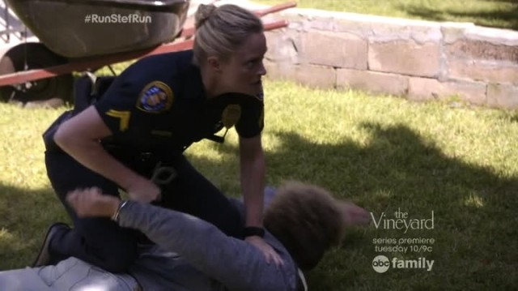
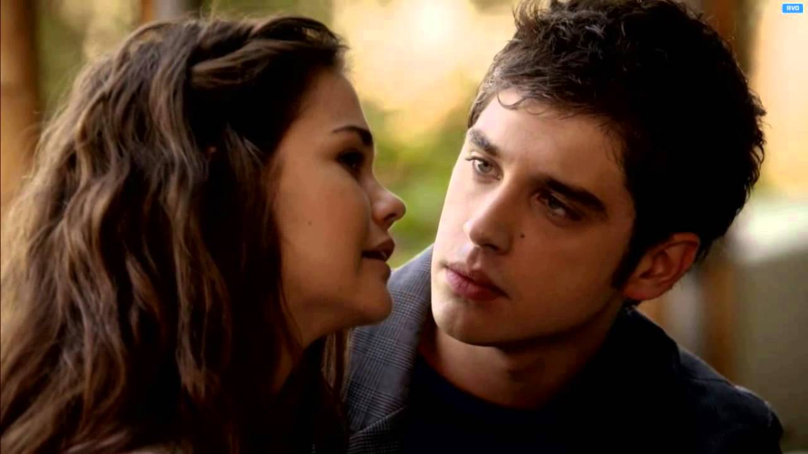

Callie Quinn Adams Foster, interpretada por Maia Mitchell, es un personaje principal en The Fosters y Good Trouble, y un personaje recurrente en Girls United.
Callie es hija biológica de Robert Quinn y de la fallecida Colleen Jacob. Ella es la hijastra de Donald Jacob y la hija adoptiva de Stef y Lena Adams Foster. Ella es la media hermana materna de Jude (aunque son considerados hermanos de sangre entre ellos), la media hermana paterna de Sophia y la hermana adoptiva de Mariana, Jesús y Brandon.
Su educación áspera y su pasado tumultuoso la hicieron presenciar muchas injusticias y ser víctima de innumerables crímenes y abusos. Después de ser adoptada, Callie se convirtió rápidamente en una luchadora por la justicia social con fuertes creencias sobre la igualdad. Después de la secundaria, asistió y se graduó de UCSD después de estudiar en su programa de derecho. Poco después, recibió y aceptó una oferta de trabajo para trabajar con un juez federal. Ha sido testigo de la desigualdad y está familiarizada con el sistema que está luchando para cambiar a través de políticas.
Callie es, junto a Brandon, el personaje más importante de toda la trama. Ella es la que con sus accione mueve la trama. Durante toda la serie todos los sucesos que dirigen el curso de la misma tienen que ver con Callie. Por ejemplo: el ser adoptada de manera temporal es lo que da inicio a la serie; el decidir ir a recuperar a Jude de su un paddre de acogida hace que Stef tenga que irrumpir en una casa como policia; o cuando ella no resulta ser hija biológica de Donald, lo cual desencadena la lucha por la custidia con Robert Quinn.
Callie es admás uno de las personajes más complejos de toda la serie, aunque no sea el más evoluciona. Una de las partes más importante es su romance con Brandon. Un romance que dará lugar a una de las cosas más bonitas y que dan pie a esta página, el Brallie. Este es un tema tan sumamente complejo, aunque más que complejo en shippeante, que se le ha decidido dedicar una página para él solo. Visitar el apartado Brallie, para conseguir más información sobre este tan maravilloso y jugoso shippeo.
